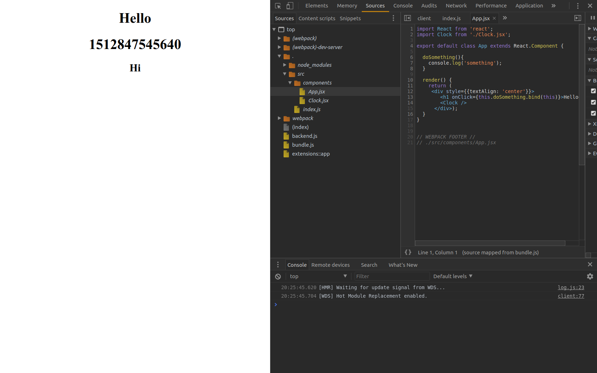

Debugging React With Sourcemaps
If you are using JSX and bundling it you need to generate a sourcemap in order to be able to debug the code you are actually writing.
I’ve tweaked my existing react setup found here.
We need to add one thing to the webpack.config.js file.
1 | devtool: "source-map" |
Also for webpack-dev-server we need to add two addition arguments –debug and –output-pathinfo.
So the start script in package.json looks like this:
1 | "start": "npx webpack-dev-server --hot --progress --colors --debug --output-pathinfo" |
Now if start react-dev-server and go to localhost:8080 and inspect the page i can find the source map files under webpack.

I can also debug the app from vscode.
I needed to install the Debug from Chrome extension and set the following launch.json.
1 | { |